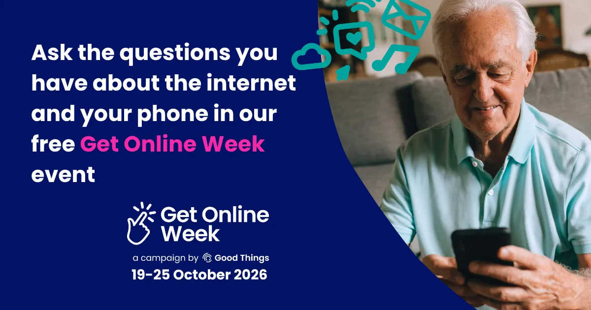

Your digital confidence guide
Get Online Together · Tumbarumba · Friday 23 October 2026

Keep this guide and take one small step at a time. You do not need to know everything. If something online feels rushed, unusual or confusing, pause and ask someone you trust for help.
1. Keep learning with Be Connected
Be Connected offers free, self-paced learning for everyday digital skills.
- Choose a topic that matters to you: video calls, photos, online forms, shopping or safety.
- Work at your own pace. An account can be helpful, but ask first what information is needed and only enter your own details.
- Use a trusted helper or library support if you get stuck.
2. Make sign-ins safer
Use a different strong passphrase for each important account. A passphrase can be several memorable words, not a single easy word.
- Turn on multi-factor authentication (MFA) where offered. It adds a second check after your password.
- Never share a password, verification code or recovery code — not even with someone claiming to be from a bank or government.
- Consider a reputable password manager if you want help remembering unique passwords.
3. Spot scams without panic
Scams often create urgency: “act now”, “your account is locked”, or “keep this secret”. AI can make messages sound more convincing, but the safety steps are the same.
- Stop. Do not click, reply, pay or give a code.
- Check using a number or website you already know — not a link in the message.
- Ask a trusted person. Save screenshots or messages if you need to report it.
4. Emergency information
For urgent danger, call 000. For warnings and updates, check official emergency services and local information channels. A phone alert is useful, but do not rely on one alert alone.
- Save trusted emergency websites/apps before you need them.
- Keep a charged phone, charger/power bank, radio and paper contact list where practical.
- Share your plan with people close to you.
If something goes wrong
Disconnect from a suspicious caller or website. Do not send more money or details.
Use the official app, statement or website to contact your bank, provider or government service.
Report scams to Scamwatch. If identity details may be exposed, IDCARE can help. Tell a trusted person — you are not to blame.
futuretogether.community/meetups
Future Together
futuretogether.community/meetups
02 6948 3707 · info@futuretogether.community
Get Online Week with Good Things Australia
Be Connected resources available